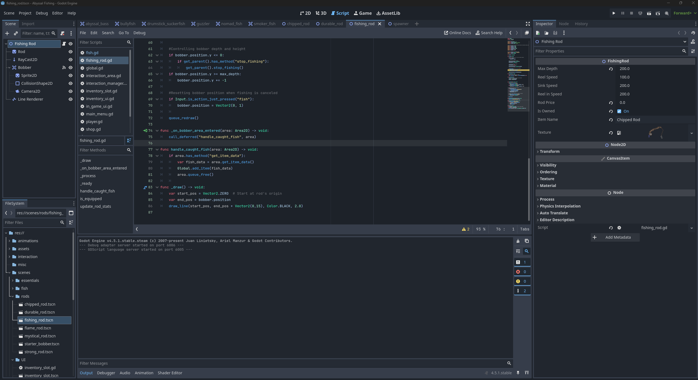
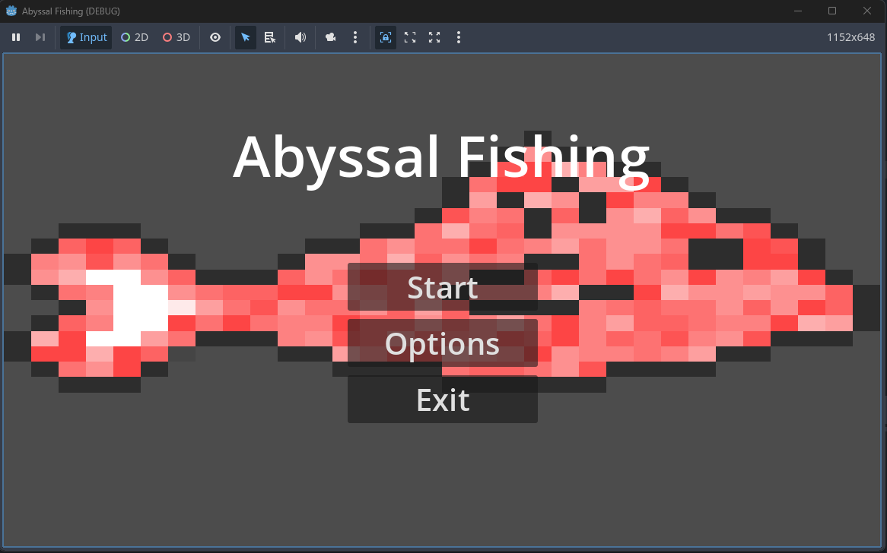
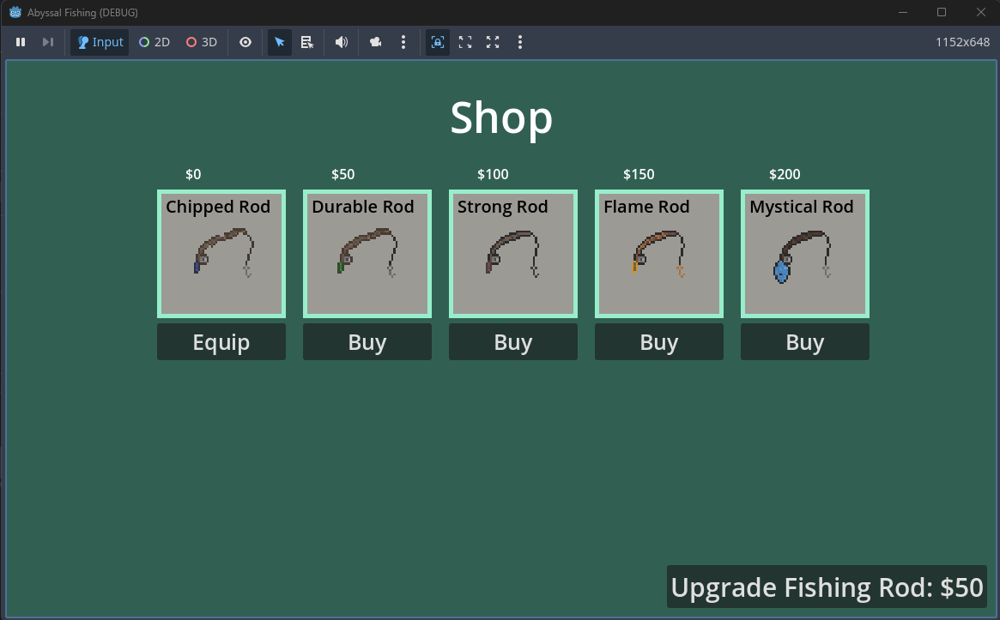
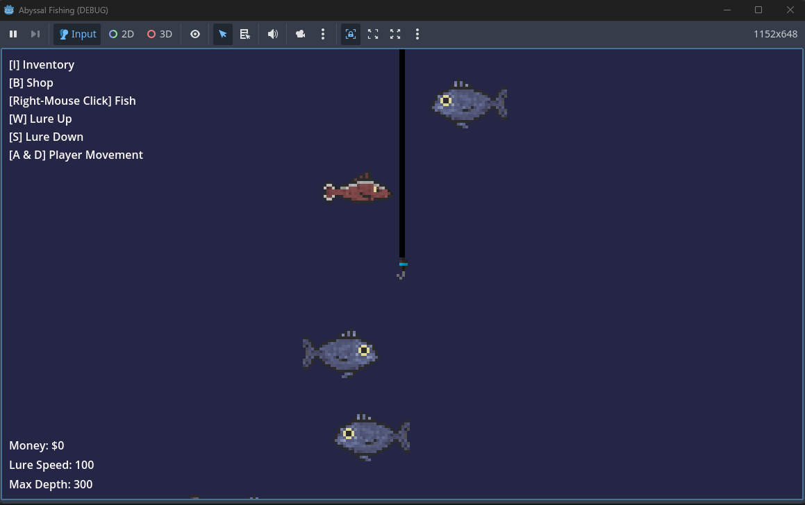

Abyssal Fishing - Game




Summary
Abyssal Fishing is a singleplayer fishing game made with the Godot engine. You explore a small island, upgrade your fishing tools, and try to catch strange, rare fish from a bottomless abyss. As you play, you fill out your fishing guide and discover new kinds of fish. The game is meant to be relaxing and easy to pick up, with simple controls and a focus on exploring and collecting.
Purpose
- Practice creating a complete game loop around collection, and progression.
- Design and implement core mechanics such as fishing, movement, and upgrades in GDScript.
- Develop a collection system for in-game progression and replayability.
- Gain hands-on experience building a desktop game for Windows using Godot.